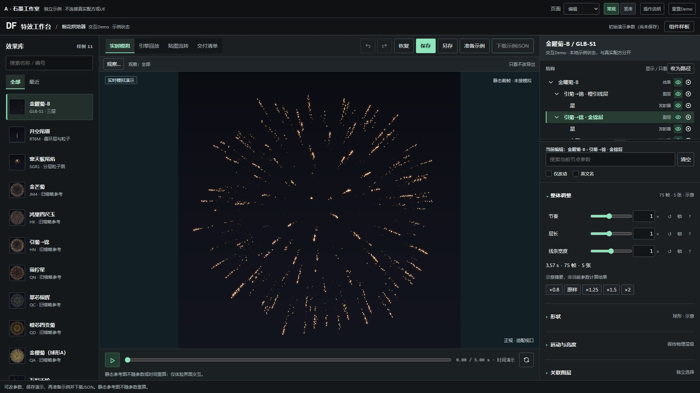
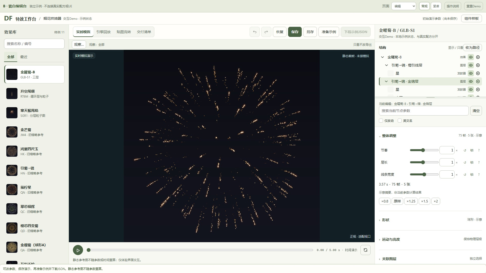
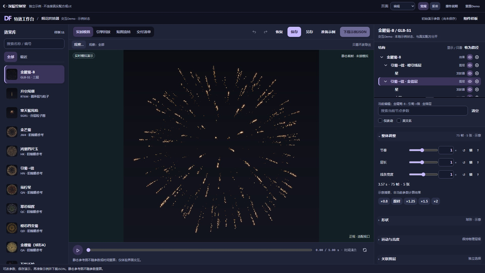

01 PRECISION
石墨工作室
低彩度深灰与薄荷指示，精确字重、3px控件、底线标签与低阴影，把注意力让给画面和数值。
取舍 高密度制作最稳妥，视觉表达较安静。

保留 V5 七页、两档密度和原有交互。可在内页切换页面、修改数值、显隐图层、保存演示、测试交付和导入状态，然后直接切换 A / B / C 对比。
低彩度深灰与薄荷指示，精确字重、3px控件、底线标签与低阴影，把注意力让给画面和数值。
取舍 高密度制作最稳妥，视觉表达较安静。

暖瓷白、墨色与橄榄绿，少量衬线标题、白色控件、8px圆角与编辑式层级，逐项核对更从容。
取舍 白天阅读清晰，暗室与黑底预览之间反差较强。

墨靛与熏衣草、强字重数值、10px圆润控件、胶囊状态与表面分组，建立夜间创作的空间感。
取舍 编排和展示更鲜明，强调色存在感更强。

独立草稿，未接入原项目。烟花图像为原静态参考；演示存档和示例 JSON 均独立，不能作为真实素材包。截图仅用于视觉比较。